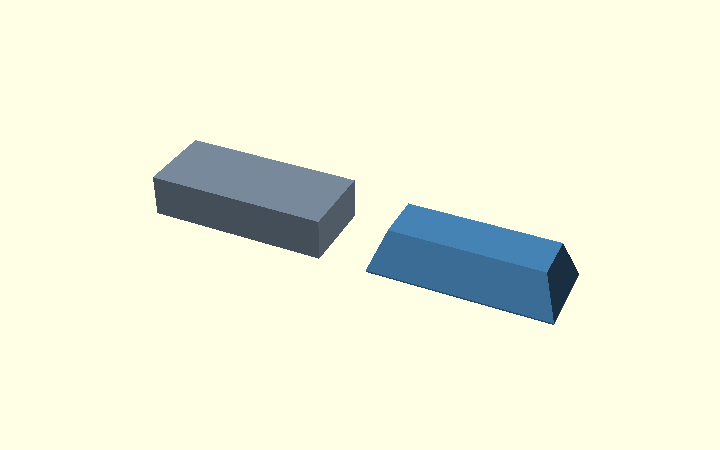
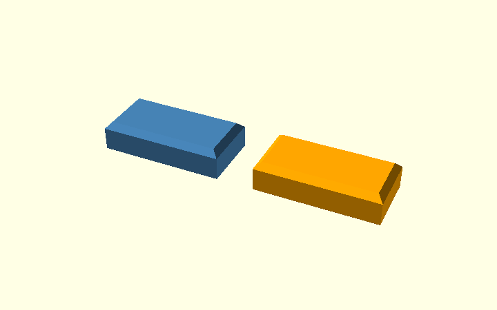

How hull() creates the bracket's side chamfers
The corner bracket uses hull() in Step 2, immediately after the
rounded L profile has been extruded. This guide starts with a rectangular
bar, then explains the actual bracket construction line by line.
Go straight to: simple bar · actual bracket · combined chamfer experiment.
hull() wraps its inputs in the smallest convex shape containing
them. Think of a tight rubber band in 2D or taut plastic film in 3D.
It can connect differently sized cross-sections with sloping faces.
It does not follow a concave L-shaped outline on its own:
an additional intersection() is needed.
The editable demonstration is hull_explained.scad. For annotated pictures of the actual bracket's chamfers, see the Chamfer Guide. For drawing or rounding the inside corner, see the separate Polygon and inside-corner guide, including the former point-based arc method. That is a different operation.
1. First learn hull with a rectangular bar
A. Start with a plain bar
A rectangular solid has straight, sharp edges.

openscad
module original_bar() {
translate([0, 0, height / 2])
cube([length, width, height], center = true);
}
B. Make a wide, thin layer
This horizontal layer covers the whole footprint of the bar.

openscad
module wide_layer() {
translate([0, 0, slice_thickness / 2])
cube([length, width, slice_thickness], center = true);
}
C. Make a smaller layer above it
Move the second layer to the top and inset its four edges by
chamfer millimetres. The two layers do not touch.

openscad
module narrow_layer() {
translate([0, 0, height - slice_thickness / 2])
cube([length - 2 * chamfer, width - 2 * chamfer,
slice_thickness], center = true);
}
D. Connect them with hull
hull() creates the connecting sloped faces. It does not need an
explicit polygon for each side.

openscad
module sloped_hull() {
hull() {
wide_layer();
narrow_layer();
}
}
E. Compare the result
intersection() keeps only the part common to both shapes. Here
the hull already fits inside the original bar, so the intersection
does not visibly change it.

openscad
module clipped_bar() {
intersection() {
original_bar();
sloped_hull();
}
}
The principle to carry over: provide a wide shape and a narrower shape at different positions; hull connects them. For the bracket, the shapes are extruded polygons rather than horizontal rectangles.
2. How the real corner bracket uses hull
This section follows
corner_bracket.scad, with the
default settings W = 20 mm and cs = 2 mm.
Step 2.1 — Start with the actual L profile
Step 1 of the model walkthrough builds a 2D
profile() from the L polygon plus the rounded inside corner.
linear_extrude(height = W, center = true) gives that shape a
width of 20 mm. rotate([90,0,0]) makes the extrusion run along
the Y axis, so its side faces lie at Y = -10 and Y = +10.

The intended side-edge bevel is 2 mm deep into each outside side face. We want to keep the middle of the part unchanged.
Step 2.2 — Build a temporary outer envelope
The source defines outer_shape() as a convex polygon containing
the L. It deliberately bridges the open inside region of the L.
This is not the printable part; it is only a convenient shape for
controlling the outside edges.
openscad
module outer_shape() {
polygon([
[armH, -armV], [armH, t - c], [armH - c, t],
[-t + ce, t], [-t, t - ce], [-t, -armV + c],
[-t + c, -armV]
]);
}
Why use this simpler polygon? A hull of the real L would also bridge its inside opening. The temporary convex envelope lets us apply a consistent outside-edge bevel first, and restore the real inside boundary afterward.
Step 2.3 — Define two differently sized 3D envelopes
The first envelope has the full 2D outside outline, but its
extrusion is only W - 2*cs = 16 mm wide. It occupies
Y = -8 ... +8. It preserves the full outside dimensions in
the middle of the bracket.
The second envelope reaches the full 20 mm width, from
Y = -10 ... +10, but its 2D outline is inset by cs = 2 mm
using offset(delta = -cs). At the outermost side faces, its
perimeter is therefore smaller.
```openscad // Full perimeter, narrower Y span (-8 .. +8 mm). linear_extrude(height = W - 2 * cs, center = true) outer_shape();
// Inset perimeter, full Y span (-10 .. +10 mm). linear_extrude(height = W, center = true) offset(delta = -cs) outer_shape(); ```
Notice that width here refers to the Y direction, while
offset() changes the perimeter in the X/Z profile plane. The
combination gives a 2 mm bevel at each outside side face.
The two extrusions overlap: hull() connects their outer
boundaries rather than joining two isolated flat plates.
Step 2.4 — Hull the envelopes, then orient them
openscad
module side_chamfer_env() {
rotate([90, 0, 0]) hull() {
linear_extrude(height = W - 2 * cs, center = true)
outer_shape();
linear_extrude(height = W, center = true)
offset(delta = -cs)
outer_shape();
}
}
The code constructs the two extrusions in local coordinates,
applies hull() to connect their outside surfaces and rotates
the result to match the bracket. This is the direct counterpart
of the simple rectangular-bar example.
Step 2.5 — Intersect with the true L profile
The limiting envelope is convex, so it also occupies the space between the two arms. We must not print that filled-in region.
openscad
module body() {
intersection() {
rotate([90, 0, 0])
linear_extrude(height = W, center = true)
profile();
if (cs > 0)
side_chamfer_env();
else
rotate([90, 0, 0])
linear_extrude(height = W, center = true)
outer_shape();
}
}
The first operand is the true L, including its rounded concave
inside corner. The second is the sloped outside envelope.
intersection() keeps only the volume that belongs to both.
The result has bevels on the outer side edges, while the L opening
and plywood-facing surfaces remain governed by the original profile.

Step 2.6 — Keep the other bevels distinct
Three settings can be easy to confuse:
| Parameter | Where it works | How it is currently implemented |
|---|---|---|
c and ce |
Arm tips and large outside corner, in the side profile | Vertices in the initial 2D polygon() |
cs |
Outer edges on the two broad Y side faces | hull() envelope and intersection() |
ef |
Printed-side contact edges, the inner radius, and arm-tip junctions | Two opening hulls plus local miter hulls, removed with difference() |
This explains why the existing code still has a separate
elephant-foot step: the cs envelope is built around the
outside convex perimeter, while the ef relief also follows
the concave inner corner and its transitions.
3. How elephant-foot relief now uses hull on the real bracket
The revised production model also uses hull-based geometry for the wood-facing edges, including the rounded inside corner. However, a single global hull cannot preserve the opening on both printed sides. Here is the actual approach:
inside_opening_2d()draws the empty area between the two arms: the open quadrant, with the rounded corner-fill region excluded. Its boundary follows the straight plywood faces and the radius.- At each printed side (
Y = ±10mm),offset(delta = ef)expands that empty shape byef = 0.6mm. - At
Y = ±9.4mm, the original opening is left unchanged. - A separate
hull()on each side joins the expanded and unexpanded opening.difference()subtracts both local transition volumes from the actual L bracket. - At each arm-tip diagonal where the
csbevel andefbevel meet,relief_corner_miters()creates another short triangular miter hull. This prevents a flat unfinished end at that small corner. - The outer
csbevel still comes fromside_chamfer_env(), using the hull and intersection described in Section 2.
The essential difference is what is being hulled: Section 2 forms a limiting outer envelope; here, a pair of hulls forms inner cutting volumes. The two sides cannot share one hull because convexity would expand the opening through the full 20 mm width.
openscad
module inside_relief_envelope() {
if (ef > 0)
for (side = [-1, 1])
hull() {
opening_layer(side * (W/2 - ef));
opening_layer(side * W/2, ef);
}
}
The Chamfer Guide shows this on the actual bracket, including a close-up of the miter cutter before and after subtraction. The old straight, diagonal and circular elephant-foot cutters are kept only in the regression fixture. For supported configurations, CI compares the full old and new solids, including nut pockets and bolt holes. This is a near-equivalence test: minor changes around transitions are measured, not claimed to be bit-for-bit identical. Physical fit is still unverified.
4. Earlier single-hull experiment on a straight bar
For a convex straight arm, the editable combined-chamfer experiment joins four rectangular layers in one global hull:
- Bottom layer inset by
ef = 0.6mm. - Full-width layer at height
ef. - Full-width layer before the top bevel.
- Top layer inset by
cs = 2mm.

The left object uses one hull; the right uses three separate hull segments as an equivalent straight-bar reference.

This example remains useful to understand why two bevels can be combined for a convex solid. For the concave full L, the production implementation instead uses an outer hull, two local inner-opening hulls and additional short miter hulls at the arm tips.
Where to read next
For the rounded inside corner, the previous sin()/cos()
point-list method and the current square() - circle() method,
see Polygons and rounded inside corners.
That subject is intentionally separate from this guide about
hull() and outside edge chamfers.